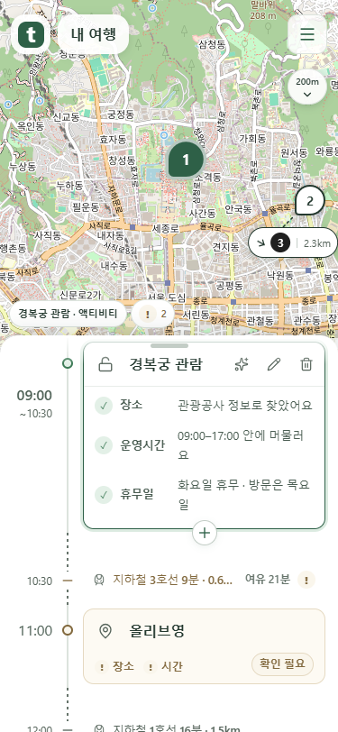
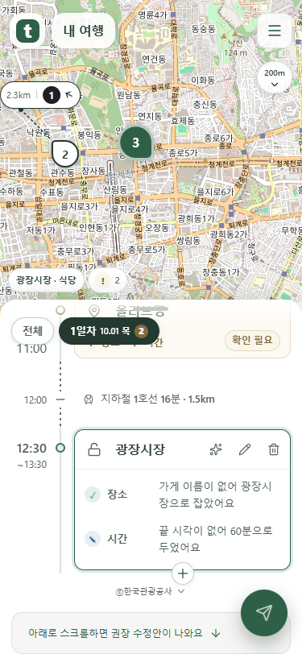
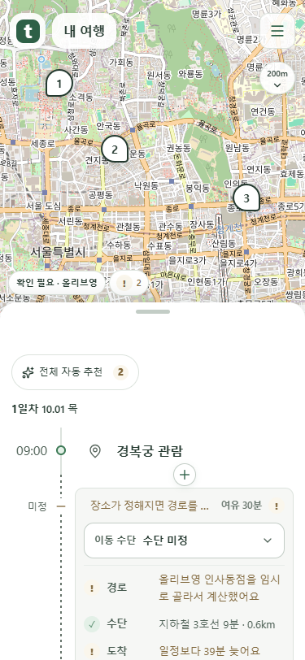

하단 밀착·미정 시각·고정 시작점
실제 웹 코드와 mock 서버로 촬영했습니다. 공개 배포 상태를 나타내는 화면은 아닙니다.
가려지는 경계부터 고정
원래 시각이 위로 가려지는 순간부터 따라오며, 해당 일정이 끝나면 함께 사라집니다.

하단 안내 아래 빈 공간 제거
수정안 안내가 스크롤 영역 아래에 붙고 보내기 버튼은 글자를 가리지 않습니다.

정해지지 않은 이동 시각은 미정
출발·도착이 둘 다 없으면 미정 하나만 표시하고, 일부만 없으면 알려진 시각을 유지합니다.
